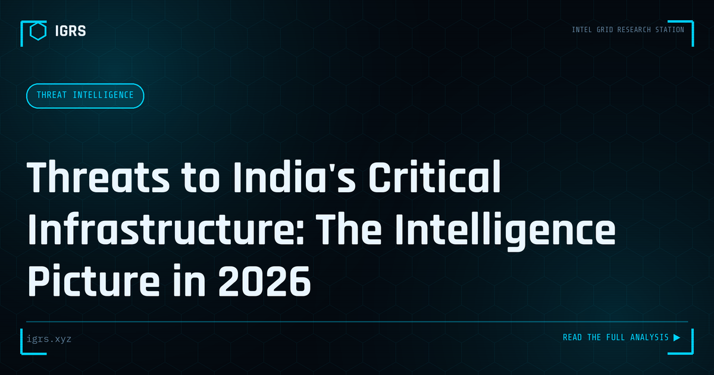

Threats to India's Critical Infrastructure: The Intelligence Picture in 2026
| File No. | IGRS-059/2026 |
| Subject | Open-source intelligence assessment of cyber threats targeting Indian critical infrastructure sectors |
| Category | Threat Intelligence |
| Author | Manuj Kumar Pandey |
| Published | 2026-06-02 |
| Reading time | 12 minutes |
India's power grid, financial system, telecom networks, and government services face persistent cyber threats. What the public intelligence record shows about the current threat landscape.
Critical Infrastructure: India's High-Value Targets
India's critical information infrastructure — power grids, banking systems, telecommunications, transportation, healthcare, and government services — represents the highest-value target for cyber adversaries. A successful attack on these systems can disrupt the lives of millions, cause economic damage, and threaten national security. Understanding the threats and India's defensive framework is essential for security professionals. This guide examines the critical infrastructure threat landscape in India.
The Threat Landscape
| Threat Actor | Motivation | Typical Target |
|---|---|---|
| State-sponsored APTs | Espionage, disruption | Power, defence, government |
| Ransomware groups | Financial | Healthcare, manufacturing |
| Hacktivists | Ideological | Government, high-profile targets |
| Cybercriminals | Financial | Banking, financial systems |
Key Vulnerabilities in Critical Infrastructure
Critical infrastructure faces distinct vulnerabilities:
- Legacy systems — old SCADA and OT systems not designed for security
- IT/OT convergence — connecting operational technology to IT networks expands the attack surface
- Supply chain risk — compromised vendors and components
- Insider threats — privileged access misuse
- Unpatched systems — operational constraints delaying updates
NCIIPC: India's Protective Framework
The National Critical Information Infrastructure Protection Centre (NCIIPC) is India's nodal agency for protecting critical information infrastructure. Established under the IT Act, NCIIPC identifies and protects critical sectors, issues guidelines and advisories, facilitates information sharing, and coordinates response to threats against protected systems. Organisations designated as critical information infrastructure have specific obligations under NCIIPC oversight.
Sectors Designated as Critical
| Sector | Examples |
|---|---|
| Power and energy | Grid, generation, distribution |
| Banking and finance | RBI systems, payment infrastructure |
| Telecommunications | Network operators, internet backbone |
| Transport | Railways, aviation, ports |
| Government | E-governance, defence systems |
| Healthcare | Hospital systems, health data |
The CERT-In Reporting Mandate
CERT-In directions require critical infrastructure organisations to report cyber incidents within 6 hours of detection. This rapid reporting enables coordinated national response and threat intelligence sharing. Combined with 180-day log retention requirements, the framework ensures that incidents are both reported promptly and investigable. Critical infrastructure operators face heightened obligations given the national-security implications of attacks on their systems.
OT and SCADA Security
Operational Technology and SCADA systems controlling physical processes present unique security challenges. Unlike IT systems, they prioritise availability and safety over confidentiality, often run legacy software, and cannot easily be patched or taken offline. Attacks on these systems can cause physical consequences — power outages, equipment damage, safety hazards. Protecting them requires network segmentation, strict access control, and continuous monitoring adapted to the OT environment.
State-Sponsored Threats to India
India faces persistent threats from state-sponsored advanced persistent threat groups targeting critical infrastructure for espionage and potential disruption. These actors are patient, well-resourced, and sophisticated, often maintaining long-term access to gather intelligence or pre-position for future disruption. Defending against them requires advanced threat detection, threat intelligence, and the assumption that determined adversaries may already be present in the network.
Building Critical Infrastructure Resilience
Protecting critical infrastructure requires a comprehensive approach:
- Network segmentation isolating OT from IT and the internet
- Continuous monitoring and threat detection
- Strict access control and privileged access management
- Supply chain risk management
- Incident response plans tested through drills
- Compliance with NCIIPC guidelines and CERT-In directions
The National Security Dimension
Attacks on critical infrastructure transcend ordinary cybercrime — they are matters of national security. India's framework, anchored by NCIIPC and CERT-In, reflects this seriousness. For security professionals working in or protecting critical sectors, the stakes are exceptionally high: the systems they defend underpin the functioning of the nation. Vigilance, robust defences, rapid incident response, and adherence to the national framework are the responsibilities that come with protecting India's critical information infrastructure.